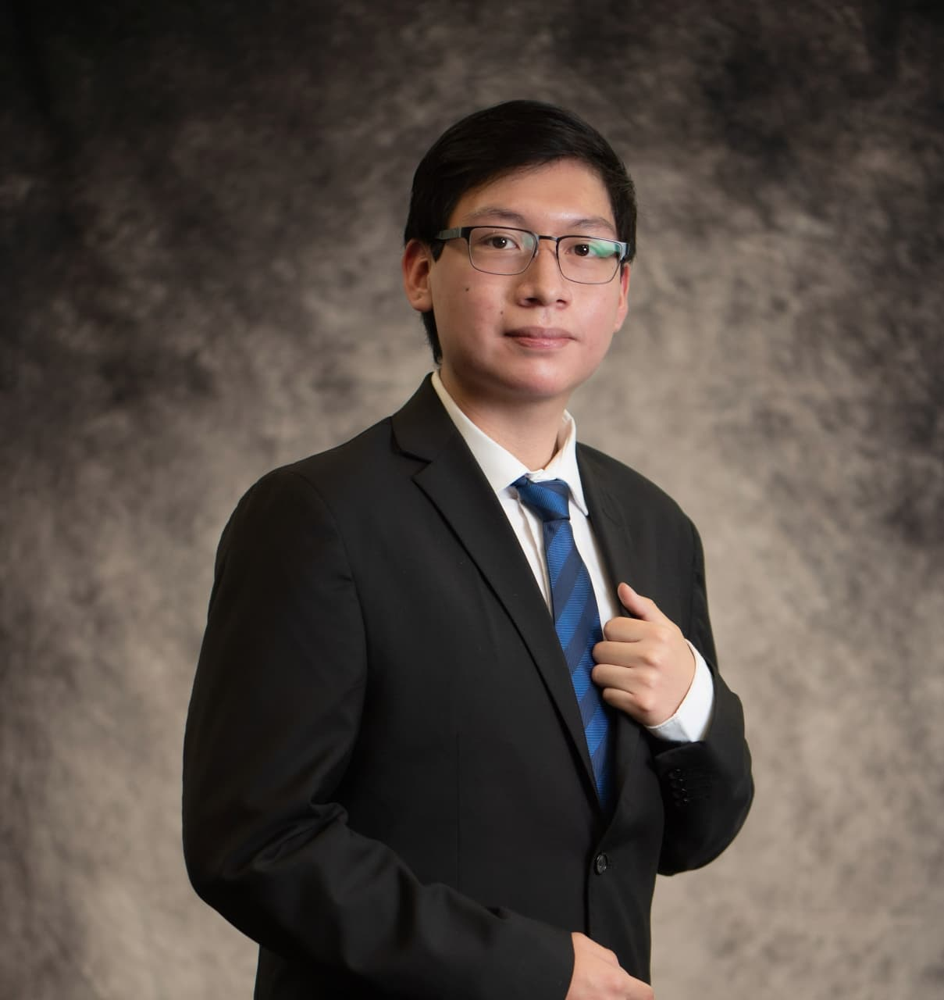

Modelado 3D, diseño mecánico. Experiencia en el desarrollo de arquitecturas de hardware utilizando herramientas como Fusion, AutoCad y SolidWorks.
Explorar ProyectosDesarrollo de sistemas embebidos, programación de microcontroladores y diseño de redes de potencia para vehículos autónomos y sistemas de control.
Explorar ProyectosImplementación de algoritmos de navegación, visión por computadora, e integración de frameworks para tareas de tracking automatizado.
Explorar ProyectosComo parte de mi consolidación profesional, he orientado mi desarrollo técnico hacia el diseño y diagnóstico de sistemas de telecomunicaciones. Este enfoque me permite integrar mi experiencia en hardware con la infraestructura de conectividad de capa física y de red. Mis competencias aplicadas incluyen:
Desarrollo colaborativo del catamarán autónomo en equipo. Participación cruzada en el modelado estructural, integración de la arquitectura eléctrica y sensores.
Liderazgo general y dirección técnica electrónica para el desarrollo del vehículo de competencia en Shell Eco-marathon.
Guía técnica para estudiantes en diseño mecánico, transmisión de conocimientos y desarrollo de estrategias de competencia.

Como ingeniero en electrónica, disfruto enormemente el desafío de diseñar hardware y sistemas que interactúen con el mundo real. Haber tenido la oportunidad de aportar al desarrollo de tecnología para el diseño de sistemas autónomos y de competencia me ha dejado una gran lección: el éxito técnico es importante, pero es la capacidad de escuchar, adaptarse y trabajar unidos lo que realmente saca adelante un proyecto.
Mis valores fundamentales son el orden en cada proceso, el respeto por mi equipo y la ingeniería, el impulso constante hacia el progreso y la innovación, y por encima de todo, una absoluta responsabilidad sobre mis actos y decisiones.
Descargar CV